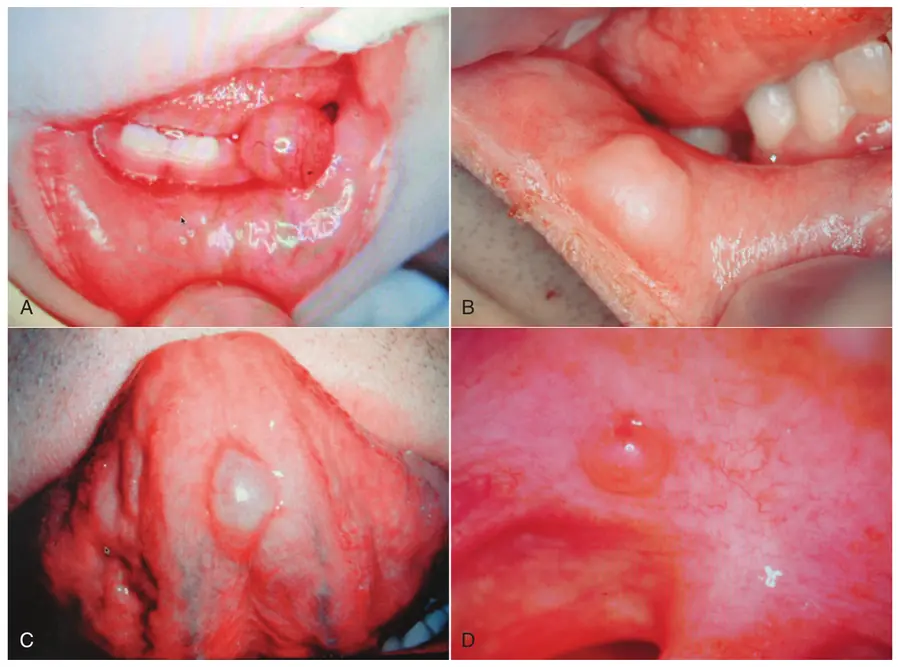
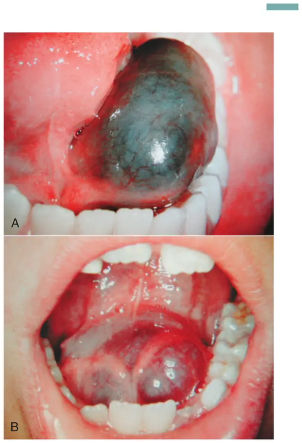

نسخه استخراجشده؛ ترجمه یا تأیید علمی انجام نشده است. وضعیت: captured
مجاری بزاقی، بهویژه مجاری غدد کوچک، گاهی دچار تروما میشوند — معمولاً با گاز گرفتن لب — و زیر مخاط سطحی قطع یا مختل میگردند.

و سپس: بزاق تولیدشده زیر مخاط به بافت نرم نشت میکند، و با گذشت زمان ترشحات درون بافت انباشته میشوند و میتوانند یک سودوکیست بسازند — کیستی بدون پوشش اپیتلیال حقیقی — که حاوی بزاق غلیظ و چسبناک است.
و محلها: این ضایعات شایعترین در مخاط لب پایین هستند و موکوسل نامیده میشوند؛ و دومین محل شایع تشکیل موکوسل، مخاط باکال است.
و ظاهرش: تشکیل موکوسل به مخاط پوشانندهی برجسته، نازکشده و کشیده میانجامد که بهصورت وزیکولی پر از مایع شفاف یا خاکستری-آبی دیده میشود. و بیمار مکرراً تاریخچهای از پر شدن ضایعه از مایع، پاره شدن مجموعهی مایع، و دوباره پر شدن ضایعه را نقل میکند.
و سرنوشتش: برخی موارد تشکیل موکوسل خودبهخود و بدون جراحی پسرفت میکنند، حال آنکه ترومای مکرر میتواند تشکیل فیبروم را القا کند.
و درمان ضایعات پایدار یا عودکننده — و آن نکتهی کلیدی: درمان ترجیحی، برداشتن موکوسل و غدد بزاقی کوچک همراهش است که در تشکیلش نقش داشتهاند، تا از عود در همان محل جلوگیری شود.
و تکنیک لب پایین: بیحسی موضعی ناحیهای با بلاک عصب مِنتال داده میشود و برشی از راه مخاط زده میگردد. دیسکسیون دقیق پیرامون موکوسل میتواند برداشتن کاملش را ممکن کند؛ ولی در بسیاری موارد، پوشش نازک پیش از برداشتن پاره و موکوسل تخلیه میشود. و غدد بزاقی کوچک همراه هم برداشته و برای ارزیابی هیستوپاتولوژیک فرستاده میشوند.
و عود: میزان عود موکوسلها میتواند تا ۱۵ تا ۳۰ درصد پس از برداشتن جراحی برسد، احتمالاً بهعلت برداشتن ناقص یا ترومای مکرر به غدد بزاقی کوچک باقیمانده.
رانولا — شایعترین ضایعهی غدهی سابلینگوال: رانولا میتواند موکوسل غدهی بزاقی سابلینگوال شمرده شود، و از احتباس موکوس در سیستم مجرایی سابلینگوال یا نشت موکوس در نتیجهی اختلال مجرایی ناشی از التهاب یا تروما پدید میآید.
و دو نوعش:
و چرا بزرگتر و کمشمارتر از موکوسل؟ رانولاها میتوانند به اندازهای بزرگتر از موکوسلها برسند چون مخاط پوشانندهشان ضخیمتر است؛ و کمتر شایعاند چون ترومای سازندهشان در کف قدامی دهان کمتر محتمل است.
و خطر جدی: در نتیجه، رانولای فرورونده این پتانسیل را دارد که از میان عضلهی مایلوهیوئید به گردن امتداد یابد و راه هوایی را به خطر بیندازد — که یک اورژانس پزشکی است.
و درمان: درمان معمول رانولا، مارسوپیالیزاسیون است — بخشی از مخاط دهانی کف دهان همراه با دیوارهی فوقانی رانولا برداشته میشود، سپس دیوارهی رانولا به مخاط دهانی کف دهان بخیه میگردد و اجازه داده میشود با نیت ثانویه و تشکیل اسکار ترمیم یابد، با احتمال کمتر عود.
و برای رانولای عودکننده یا پایدار: درمان ترجیحی، برداشتن رانولا و نیز غدهی سابلینگوال از راه رویکرد داخلدهانی در کف قدامی دهان است. و یک نکتهی دیگر: چند مطالعهی اخیر نشان دادهاند که این میتواند برای درمان اولیه هم مناسب باشد، چون میزان عود با مارسوپیالیزاسیون ممکن است بهطور غیرقابلقبولی بالا باشد، بهویژه در جمعیت بیماران کودک.
و تشخیص افتراقی تورم کف دهان: رانولا، کیست لنفواپیتلیال، کیست اپیدرموئید یا درموئید، تومورهای غدهی بزاقی مانند کارسینوم موکواپیدرموئید، و تومورهای مزانشیمی مانند لیپوم، نوروفیبروم یا همانژیوم. رانولای فرورونده هم در افتراق تودههای خط وسط و جانبی گردن جای دارد.
عفونتهای غدد بزاقی بزرگ میتوانند حاد یا مزمن باشند و معمولاً — ولی نه همیشه — با بیماری انسدادی مرتبطاند، بهویژه در غدهی سابمندیبولار، جایی که «انسداد به عفونت میانجامد».

و اما پاروتید داستان دیگری دارد: علت سیالادنیت چرکی حاد غدهی پاروتید معمولاً تغییری در تعادل مایعات است که محتمل است در بیماران مسنتر، ناتوان، دچار سوءتغذیه یا دهیدراته، یا با بیماری مزمن و همراهیهای قابلتوجه رخ دهد. و در این موارد، بیشتر عفونتهای پاروتید دوطرفهاند.
و دموگرافی: میانگین سن بروز عفونتهای غدد بزاقی ۶۰ سال است، با ترجیح خفیف مردانه.
و میکروبیولوژی — یک ارگانیسم بر همه سروری میکند: در بیشتر موارد، فلور باکتریایی مختلط مسئول سیالادنیت است. ولی شایعترین ارگانیسم منفرد در عفونتهای غدد بزاقی، استافیلوکوکوس اورئوس است — چون این ارگانیسم بهطور طبیعی پیرامون دهانههای مجرا کلونیزه میشود.
و مکانیسم ورودش: در حالتهای کاهش یا کندی جریان بزاق — یعنی انسداد یا دهیدراسیون — هجوم برگشتی S. aureus به سیستم مجرایی و غده رخ میدهد و میتواند به عفونت بینجامد.
و تظاهر بالینی عفونت باکتریایی حاد: شروع سریع تورم در نواحی پیشگوشی (پاروتید) یا سابمندیبولار، با قرمزی و درد همراه. و لمس غدهی درگیر یا هیچ جریانی نشان نمیدهد یا ترشح غلیظ چرکی از دهانهی مجرا بیرون میکشد — و اینجا جمله برعکس میشود: «عفونت به انسداد میانجامد».
و درمان: مراقبت علامتی و حمایتی شامل هیدراسیون وریدی، آنتیبیوتیک، و مسکن.
و انتخاب آنتیبیوتیک تجربی — که مستقیماً از میکروبیولوژی میآید: آنتیبیوتیک تجربی اولیه باید محتملترین ارگانیسم عامل یعنی S. aureus را هدف بگیرد، و باید شامل یک سفالوسپورین نسل اول یا یک پنیسیلین نیمهمصنوعی ضداستافیلوکوکی مانند اگزاسیلین یا دیکلوگزاسیلین باشد. و مطالعات کشت و حساسیت از هر مادهی چرکی باید برای کمک به انتخاب مناسبترین آنتیبیوتیک هر بیمار گرفته شود.
و شدت درمان: آنتیبیوتیک باید برای اکثریت این بیماران وریدی و با دوز بالا داده شود — بیمارانی که معمولاً برای هیدراسیون وریدی، کنترل درد، و ارزیابی تغذیهای به بستری نیاز دارند. و در بیشتر موارد، جراحی شامل برش و درناژ در مدیریت عفونتهای غدد بزاقی ضروری میشود.
و هشدار: عفونتهای درماننشده میتوانند بهسرعت پیشرفت کنند و به انسداد تنفسی، سپتیسمی، و سرانجام مرگ بینجامند. و در برخی موارد عفونت مکرر، آسیبهای تکراری به اختلال برگشتناپذیر عملکرد غده میانجامند، که در آن صورت برداشتن غده (سیالوآدنکتومی) میتواند اندیکاسیون داشته باشد.
و پاروتیت ویروسی یا اوریون — بیماریای کاملاً متفاوت: یک بیماری واگیر حاد و غیرچرکی است.
و چرا تمایز بالینی مهم است؟ چون عفونتهای ویروسی نتیجهی بیماری انسدادی نیستند و درمان متفاوتی میطلبند که شامل آنتیبیوتیکدرمانی نمیشود.